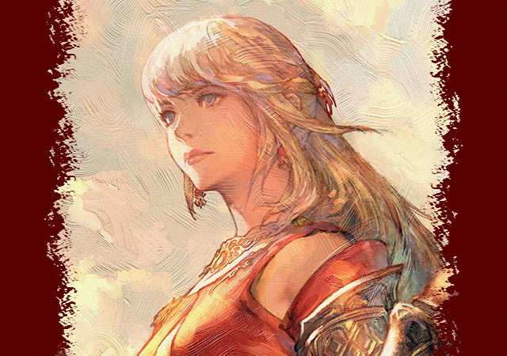
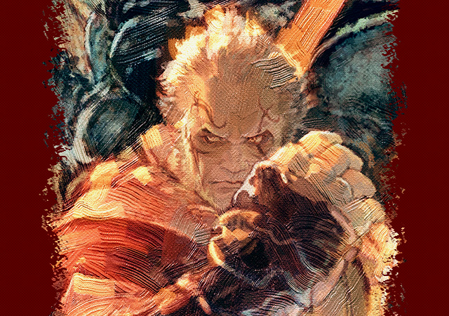
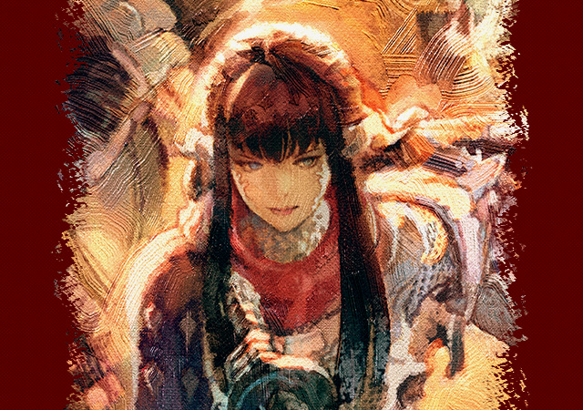
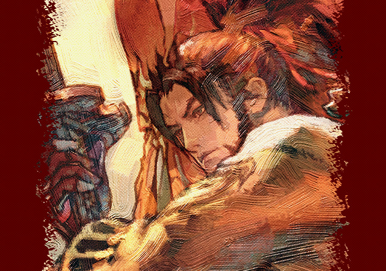
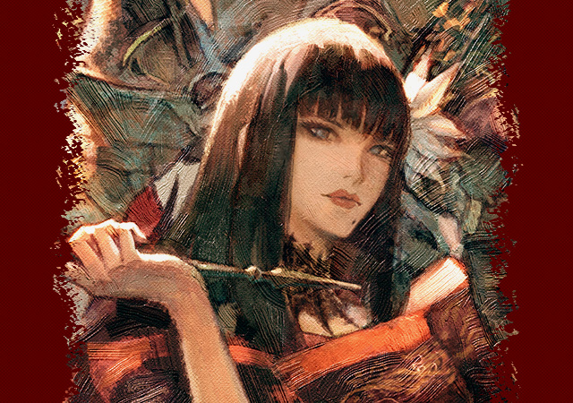
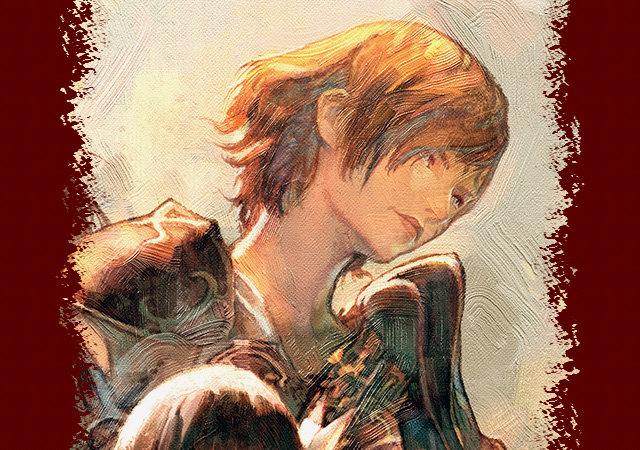
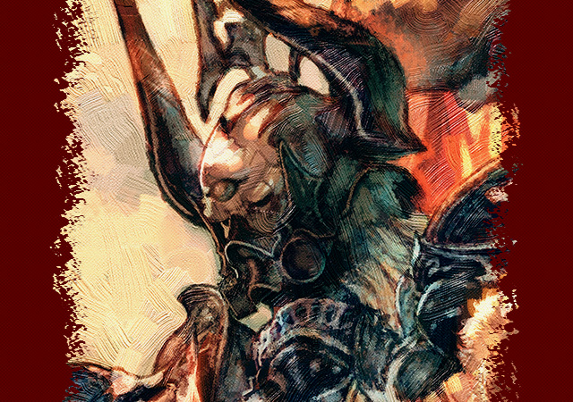

| Home | Main Character | Website |
|---|
Editor:Sean Yang
|  |
LyseA young fighter of surpassing skill, Lyse yearns to bring freedom to her homeland of Ala Mhigo, which fell to the Empire when she was but a child. Her brash, impulsive ways often result in her biting off more than she can chew. Yet the time may come when she must rise to the occasion and become a leader of men... |
|  |
GosetsuHailing from the Far Eastern land of Doma, Gosetsu has long served Doma and her sovereign, and fought valiantly to defend them from the Garlean Empire twenty-five years ago. Though Doma fell in the end, the samurai has since labored tirelessly to see her rebuilt. Renowned as a peerless warrior, this loyal retainer dreams of a day when the shadow of Garlemald no longer darkens his homeland. |
|  |
YugiriA shinobi in service to the Far Eastern land of Doma, Yugiri took part in the nation's failed rebellion against the Garlean Empire. When all was lost, her liege bade her take to the sea, along with many of Doma's people, and seek sanctuary in the western lands of Eorzea. Her calm, collected demeanor belies a burning desire to face the imperials in battle once more, and redeem the failures of her past. |
|  |
HienThe young heir to the throne of Doma, Hien is a charismatic leader beloved of his people. Together with Gosetsu and Yugiri, he spurred his countrymen to rise up against their Garlean oppressors. But when the rebellion was crushed, Lord Hien vanished without a trace... |
|  |
YotsuyuThe acting imperial viceroy of Doma, Yotsuyu's grace and beauty belie a heart of stone. A cruel, sadistic ruler, she harbors a deep hatred for Domans. Under the pretext of purging radical elements, she has perpetrated numerous atrocities against her own people. Yet all are the hero of their own story... |
|  |
YotsuyuA young soldier born and raised during the imperial occupation of Ala Mhigo, Fordola was promised the world─education, training, citizenship─in exchange for service. Scorned as traitors by their people and savages by their Garlean masters, she and others like her struggle to forge their own path in an unforgiving world. |
|  |
Zenos yae GalvusLeader of the XIIth Legion and crown prince of the Garlean Empire, Zenos is possessed of but a single passion: to stand on the front lines, blade in hand, and dance with death. He regards friend and foe alike with contempt, and tales of his brutality against both have spread far and wide. While crushing the rebellion of yesteryear in Doma, he took a liking to Far Eastern katana, which have since become his weapons of choice. |